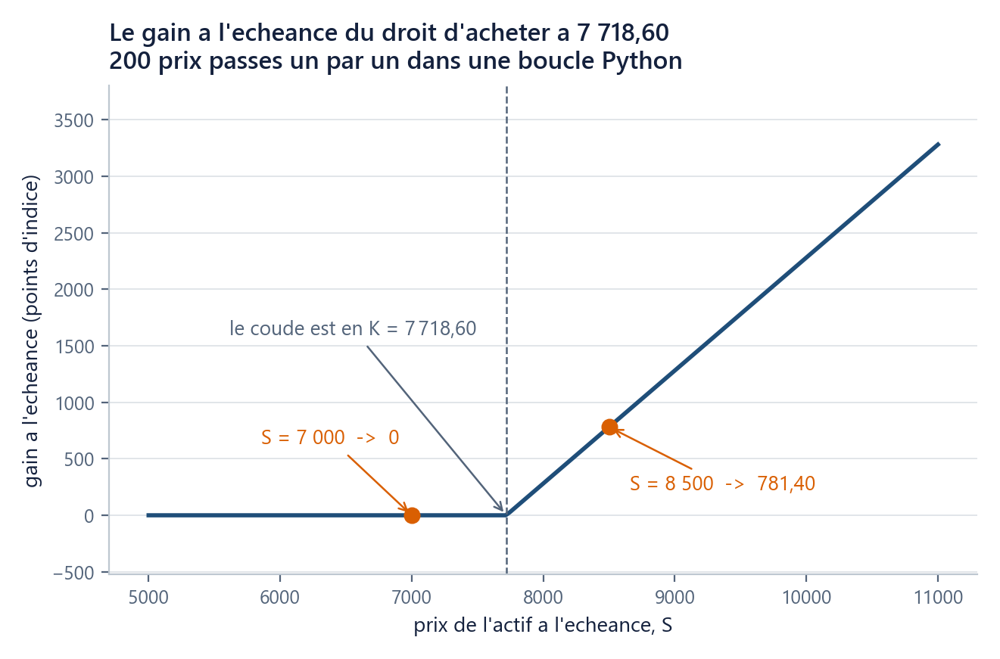

Où suis-je ? unité 5 sur 8
Les unités du chapitre
- 01Six lignes suffisent pour voir…15 min
- 02Un nom retient un résultat…20 min
- 03Une liste range des prix dans l'ordre20 min
- 04Une boucle parcourt25 min
- 05Une fonction nomme un calcul20 min
- 06Un tableau numpy remplace la boucle25 min
- 07Votre machine devient l'ordinateur du cours30 min
- 08Huit fiches d'une page suffisent…45 min
Dans cette unité
Outils : Python de zéro, sans rien installer
Une fonction nomme un calcul, un assert le met à l’épreuve sur un cas connu
Une fonction est un calcul nommé, avec des entrées et une sortie, testé sur un cas dont on connaît la réponse.
Durée 20 min · Prérequis u01, u02, u03, u04 · Idée unique : une fonction est un calcul nommé, avec des entrées et une sortie, que l'on teste sur un cas dont on connaît déjà la réponse.
La question
En u02 vous avez calculé une variation de prix : une ligne, un résultat. En u04, la pire des dix-sept années : dix lignes, un résultat. Ces deux calculs, le cours va les refaire sans arrêt. Le fil rouge contient 4 151 séances et six actifs : rien que pour la variation quotidienne, cela fait 24 906 calculs identiques, et ce n'est que le premier chapitre.
La méthode du débutant consiste à recopier la ligne prix_fin / prix_debut - 1 à chaque fois. Elle échoue pour trois raisons distinctes. On la retape, donc on la retape mal une fois sur vingt. On ne peut pas la tester : une ligne noyée au milieu d'une cellule ne se vérifie pas toute seule. Et le jour où l'on découvre une erreur dedans, il faut retrouver ses vingt copies, et celle qu'on oublie continuera à produire des nombres faux, sans message.
La question de cette unité est donc : comment écrire un calcul une seule fois, l'appeler partout, et ne plus jamais douter qu'il est juste ?
On essaie d’abord
Le second calcul de cette unité est nouveau, et il vaut mieux le deviner avant de le lire.
Un contrat vous donne, dans un an, le droit (pas l'obligation) d'acheter le S&P 500 au prix fixé aujourd'hui de 7 718,60 (sa clôture du 4 septembre 2026). Dans un an, ce droit s'éteint. Écrivez deux nombres :
- si l'indice vaut alors 8 500, combien ce droit vous rapporte-t-il à ce moment-là, sans compter ce que le contrat vous a coûté ?
- et s'il vaut 7 000 ?
Les réponses sont 781,40 et 0. Le premier cas se lit directement : vous achetez à 7 718,60 ce qui en vaut 8 500, soit 8\,500 - 7\,718{,}60 = 781{,}40 de gain. Le second est celui que l'on rate : le droit ne vous oblige à rien, donc vous ne l'exercez pas, et le gain est nul, et non 7\,000 - 7\,718{,}60 = -718{,}60. Retenez ce piège : nous allons le faire commettre à une fonction dans quelques minutes.
L’idée
Donner un nom à un calcul
def rendement(prix_debut, prix_fin):
"""Return the simple return between a starting price and an ending price."""
return prix_fin / prix_debut - 1.0
print(rendement(7747.71, 7718.60)) # -0.003757239235851584
Cinq mots-clés, une seule fois expliqués :
defannonce une définition. Le nom qui suit,rendement, est celui par lequel on appellera le calcul ensuite ; il obéit aux mêmes règles de nommage que les variables d'u02.- Entre parenthèses,
prix_debutetprix_finsont les paramètres : les cases d'entrée du calcul, vides tant qu'on n'appelle pas. - Les deux-points et le décalage de quatre espaces disent « ce qui suit est le corps de la fonction », exactement comme pour la boucle d'u04.
- La ligne entre triples guillemets est la docstring : une phrase qui dit ce que fait la fonction. Elle est écrite en anglais, comme tout le code du cours, et c'est elle qui s'affiche quand vous tapez
rendement?(u01). returnrend le résultat à celui qui a appelé. Sansreturn, la fonction rendNone, c'est-à-dire « rien ».
À l'appel, rendement(7747.71, 7718.60), les deux nombres écrits sont les arguments : ce qu'on met dans les cases. Paramètre est le nom de la case, argument la valeur qu'on y verse.
Le TP écrit ces mêmes fonctions avec deux décorations en plus : prix_debut: float, -> float, et une docstring en sections. Elles sont facultatives ; le TP les explique dans ses conventions d'ouverture.
Ce qui vit dans une fonction ne sort pas de la fonction.
def rendement_bavard(prix_debut, prix_fin):
"""Same computation, with an intermediate name kept inside."""
variation = prix_fin / prix_debut - 1.0
return variation
print(rendement_bavard(7747.71, 7718.60))
print(variation) # NameError: name 'variation' is not defined
variation n'existe que pendant l'exécution de la fonction, puis disparaît. C'est une protection, pas une gêne : une fonction ne peut pas polluer en douce le reste de votre notebook.
Un paramètre qui a une valeur par défaut
def rendement(prix_debut, prix_fin, en_pourcent=False):
"""Return the simple return, as a decimal by default, or in percent."""
variation = prix_fin / prix_debut - 1.0
if en_pourcent:
return variation * 100.0
return variation
print(rendement(7747.71, 7718.60)) # -0.003757239235851584
print(rendement(7747.71, 7718.60, en_pourcent=True)) # -0.3757239235851584
en_pourcent=False est un argument par défaut : la valeur utilisée quand l'appelant n'en fournit pas. L'appel court reste possible, et l'appel long est lisible, parce qu'on nomme l'argument au lieu d'écrire un True orphelin dont personne ne devinerait le sens six mois plus tard.
Le second calcul, et son unique formule
Le gain à l'échéance d'un droit d'achat. Notons S le prix de l'actif au jour où le droit s'éteint, et K le prix fixé au contrat, que l'on appelle le prix d'exercice. Le droit d'acheter à K rapporte alors
\text{payoff}_{\text{call}}(S, K) = \max(S - K,\ 0)soit la différence si elle est positive, et zéro sinon. Ce nombre ne descend jamais sous zéro, parce qu'un droit qu'on n'exerce pas ne coûte rien à l'échéance. Le mot anglais payoff est le nom d'usage. Ce que le contrat a coûté n'entre pas dans ce nombre : payoff et profit sont deux choses différentes. Ce qu'un tel contrat vaut avant l'échéance, ce qu'il a coûté, et pourquoi on en achète, c'est le sujet de ch01 u05 ; ici, ce n'est qu'un calcul à programmer.
def payoff_call(S, K):
"""Return the terminal gain of the right to buy at K an asset worth S."""
return max(S - K, 0.0)
print(payoff_call(8500.0, 7718.60)) # 781.3999999999996
print(payoff_call(7000.0, 7718.60)) # 0.0
max(a, b) rend le plus grand des deux nombres : c'est lui, et lui seul, qui encode « je n'exerce pas ».

assert : exiger une réponse que l’on connaît d’avance
assert abs(payoff_call(8500.0, 7718.60) - 781.40) < 1e-9
assert payoff_call(7000.0, 7718.60) == 0.0
assert payoff_call(7718.60, 7718.60) == 0.0
print("les trois controles passent")
Une ligne assert se lit « j'exige que ceci soit vrai ». Si c'est vrai, il ne se passe rien : pas d'affichage, pas de ralentissement. Si c'est faux, l'exécution s'arrête sur une AssertionError, à la ligne fautive. C'est le seul dispositif du cours qui attrape un nombre plausible mais faux.
Pourquoi abs(a - b) < 1e-9 plutôt que a == b ? (1e-9 est la notation scientifique : 1 imes 10^{-9}, un milliardième.) Parce que les nombres à virgule de la machine ne sont pas exacts :
print(0.1 + 0.2) # 0.30000000000000004
print(0.1 + 0.2 == 0.3) # False
Ce n'est pas un défaut de Python, mais l'écriture en base deux d'un nombre décimal. La règle du cours en découle : on ne compare jamais deux résultats de calcul par ==, on compare leur écart à une tolérance. Les entiers, les textes, les couples d'entiers et les zéros exacts, eux, se comparent normalement, d'où le == 0.0 des deux dernières lignes, et les == des assert du TD.
Les trois outils d'auto-correction du cours. Le module
mcdp_utilsfournitverifier(condition, message_ok, message_ko), qui affiche un message lisible puis lève l'erreur si la condition est fausse ;indice(texte), qui donne une étape du raisonnement ; etsolution(texte), replié, qui donne la réponse. Les TP les utilisent partout, car unassertqui échoue sans rien dire n'apprend rien.from mcdp_utils import verifier verifier(payoff_call(7000.0, 7718.60) == 0.0, "payoff_call est nul sous le prix d'exercice", "attendu 0.0 : avez-vous garde le max ?")
Le piège : « ma fonction marche, je l’ai regardée »
Voici la version que presque tout le monde écrit d'abord.
def payoff_call_faux(S, K):
"""Wrong on purpose: the max is missing."""
return S - K
print(payoff_call_faux(8500.0, 7718.60)) # 781.3999999999996 <- juste
print(payoff_call_faux(7000.0, 7718.60)) # -718.6000000000004 <- un gain negatif
Elle donne la bonne réponse sur le cas regardé, et un gain négatif sur un droit qu'on n'est pas obligé d'exercer. Relue à l'œil, elle passe : S - K, c'est bien la définition qu'on a en tête. Le premier assert l'arrête en trois secondes :
try:
assert payoff_call_faux(7000.0, 7718.60) == 0.0
except AssertionError:
print("AssertionError : la fonction rend -718,60 au lieu de 0,0")
Un test qui échoue coûte trois secondes ; un prix faux coûte un chapitre. Écrivez le test avant de regarder le résultat, sur un cas dont vous connaissez la réponse sans machine : ici, les deux nombres que vous aviez prédits en début d'unité.
Une fonction ne modifie pas ce qu'on lui donne. Reprenez la liste d'u03 :
prix.append(0.0)à l'intérieur d'une fonction abîme la liste de l'appelant, comme l'aliascopie = prix. La règle du cours est celle des fonctions pures : une fonction lit ses arguments, fabrique un objet neuf, et le rend. Elle ne modifie jamais rien de ce qu'elle a reçu.Un cas de figure mérite d'être connu, parce qu'il surprend même les habitués : une valeur par défaut modifiable est fabriquée une seule fois, à la définition, et survit d'un appel à l'autre.
def ajouter(valeur, memo=[]): # a ne jamais ecrire memo.append(valeur) return memo print(ajouter(1.0)) # [1.0] print(ajouter(2.0)) # [1.0, 2.0] <- la memoire a fuiteLa parade tient en deux lignes :
memo=Noneen paramètre, puisif memo is None: memo = []en première ligne du corps.
Vérifiez-vous
(a) Qu'affiche print(rendement_muet(100.0, 110.0)) si rendement_muet calcule bien mais oublie le return ?
Réponse
(b) Que vaut payoff_call(7718.60, 7718.60) ?
Réponse
(c) Pourquoi écrire abs(a - b) < 1e-9 plutôt que a == b pour comparer deux résultats de calcul ?
Réponse
(d) (rétrospective) Reprenez le calcul de la pire année d'u04. Écrit sous forme de fonction pire_annee(annees, perfs), qu'est-ce qui devient possible et qui ne l'était pas ?
Réponse
(e) (rétrospective) Votre prédiction du début : aviez-vous écrit −718,60 pour l'indice à 7 000 ? Si oui, quelle ligne de la fonction vous aurait donné tort, et quelle ligne vous en aurait averti ?
Réponse
Ce que vous savez faire maintenant
- Écrire une fonction documentée :
def, paramètres, docstring en anglais,return, et un argument par défaut nommé. - La mettre à l'épreuve par un
assertsur un cas dont vous connaissez la réponse, avec une tolérance plutôt qu'une égalité de flottants. Unassertqui passe élimine des fautes, il n'établit rien au-delà des cas testés. - Reconnaître les deux fautes qui ne lèvent aucun message : la fonction qui rend un nombre plausible mais faux, et celle qui modifie ce qu'on lui a passé.
Unité suivante. Votre payoff_call traite un prix à la fois ; le ch04 en traitera 100 000 d'un coup, et cette unité vous laisserait écrire une boucle de 100 000 tours. L'unité u06 la supprime : une opération écrite une fois, appliquée à toutes les cases d'un tableau, et le gain, mesuré au chronomètre.